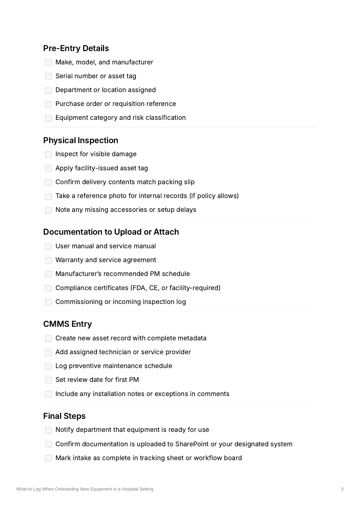

Healthcare Technology · Technical Documentation · CMMS
What to Log When Onboarding New Equipment
A practical guide for capturing complete, consistent medical equipment information when new assets enter a hospital system.
The problem
New equipment was being entered into the CMMS inconsistently. Some records included serial numbers, warranty information, and installation details. Others were missing basic information entirely.
That made service histories harder to track, slowed recall response, and created unnecessary risk during compliance reviews.
The audience
Clinical engineering technicians, administrative staff, and anyone responsible for adding new medical equipment to the CMMS.
What I did
I created a plain-language checklist defining the information that should be captured for every new asset, including serial number, model, warranty dates, vendor information, asset tag, and installation notes.
I also tied those fields back to the problems missing information could create, such as missed service calls, reporting issues, and audit failures.
The solution
The finished guide walks users through five parts of the onboarding process:
- Pre-entry equipment details
- Physical inspection and asset tagging
- Manuals, warranties, and compliance documentation
- CMMS entry and preventive maintenance setup
- Final handoff and follow-up items
The finished documentation
The checklist gives staff a repeatable reference for documenting equipment during delivery, installation, and initial CMMS entry.

The result
The guide reduced incomplete and inaccurate asset records, cut down on follow-up questions, and improved the team's ability to find equipment information when responding to recalls and reporting requests.
Skills demonstrated
- Technical writing
- Procedural documentation
- Healthcare technology
- CMMS
- Plain-language writing
- Information design
- Workflow documentation